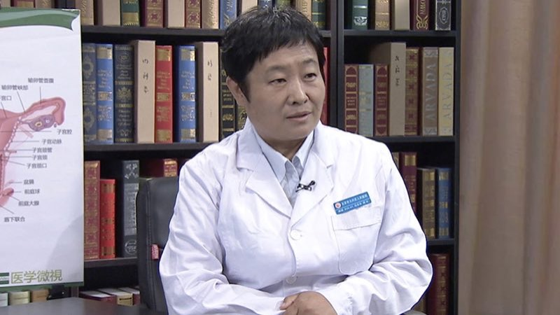

1.122 子宫脱垂¶
马秀华 主任医师¶

北京市大兴区人民医院院长 主任医师 研究生导师；
首都医科大学妇产科学系系务委员会委员；中国医师协会肿瘤防治规范化培训工作委员会常务委员；北京医学教育协会第五届理事会理事；北京市住院医师规范化培训全科医学科专科委员会委员；《中国医刊》杂志编辑委员会编委；北京市大兴区危重孕产妇救治中心主任及专家组组长；北京市大兴卫生首席专家。
主要成就： 2011年获第六届宋庆龄儿科医学奖；2014年获大兴区科学技术进步奖三等奖；2014年获大兴区科学技术奖软科学奖三等奖（两项）；2015年获大兴区科学技术奖软科学奖一等奖；以第一作者/通讯作者发表论文十余篇。
专业特长： 在妇产科临床一线工作三十年，始终坚持全心全意为患者服务的宗旨，率先开展妇科内镜检查和治疗、介入治疗，拓展阴式子宫切除术手术指征，简化子宫切除的手术步骤。作为重点学科带头人，提出“大妇产科”的概念。
子宫脱垂是怎么回事？¶
子宫脱垂是怎么回事？
我们说子宫这个器官，它是孕育胎儿的器官，同时在怀孕的间歇期，它会产生月经，是我们女性的一个生理表现的一个器官，它是靠盆底的肌肉和筋膜组织进行支持，同时它还有韧带的支撑，韧带的悬吊，把子宫固定在盆腔的一个正常的位置。
那么由于盆底支持组织的松弛，和韧带的松弛，就可以造成子宫沿着阴道的方向，向下方脱落，那么这个过程就叫子宫脱垂。
有文献报道，它的发病率是1%-4%，我们感觉这个发病率不准确，但是没有大样本的调查它的发病率到底是多少，是因为有些轻度的子宫脱垂，没有症状，她也不去就诊，所以对于我们这个发病率的统计，是有影响的。
如何评估子宫脱垂的严重程度？¶
如何评估子宫脱垂的严重程度？
子宫脱垂根据不同的情况，分成Ⅰ、Ⅱ、Ⅲ度，这个度的区分，就是子宫脱垂的严重程度。
Ⅰ度的子宫脱垂，指子宫颈口，还位于阴道内，它脱离了原来的正常位置，已经往下滑了，比如说我们看看这张图，正常的子宫颈的位置是在阴道内，那我们在这个骨盆里，还有一些骨性的标志物，正常的子宫颈，应该是距离阴道口四个厘米以上的，那么当它子宫颈口的位置，距离阴道口的位置，不足四个厘米的时候，就发生了子宫脱垂，Ⅰ度子宫脱垂，指的是四厘米以下到阴道口以上的这一部分。
Ⅱ度子宫脱垂的时候，子宫颈口就到达了阴道口以外，同时Ⅱ度又分为轻和重，那么Ⅱ度轻指的是子宫颈脱出于阴道口以外，Ⅱ度重指的是子宫颈和部分子宫体脱出到了阴道口以外，同时也可以有阴道前壁或者是后壁的脱垂。
到了Ⅲ度子宫脱垂的时候，就是子宫颈和子宫体完全脱出到阴道口以外了，就是程度的进一步的加重。
诱发子宫脱垂的相关因素有哪些？¶
诱发子宫脱垂的相关因素有哪些？
子宫脱垂，大多数是发生在产后，经过了产伤之后，分娩过程中的盆底的创伤，分娩以后，不能很好的休息，或者是比较早的就下地，下地活动，长期的蹲位，或者是提重物等等这些，造成腹压增加的这些因素，还有些人是由于产后合并有严重的便秘，也是子宫脱垂的一个重要的诱因。
那么生育创伤这是一个因素，另外一个因素，就是老年以后，绝经以后，由于失去了女性激素的支持，盆底的组织会变得相对薄弱，韧带会相对延长，那么这样的话，也是发生子宫脱垂的另外一个原因。
我们就讲营养不良是全身性的营养不良，那这样的病人，就是对于产伤的抵抗力就会更差，她修复能力也会更差，同时由于韧带的薄弱，有些腹压增加的这种机会的时候，就容易造成子宫脱垂，因此说这也是子宫脱垂的诱发因素之一。
（采访）哪些人是子宫脱垂的高危人群？
我们首先说的是她的病因里是产伤，经产妇的多产妇，尤其是生过巨大胎儿的产妇，还有就是产后不能得到很好休息的这些病人，以及合并有便秘，慢性咳嗽的病人，还有些肥胖的病人，肥胖的病人她也是造成腹压增加的一个因素，因此说这些病人，是子宫脱垂的高危人群。
所以我们说女性对于自己的关爱，一定是要注意我们的这几期，这几期包括月经期、孕期、哺乳期、产褥期等等，就是我们这些敏感时期，那么有些轻型的子宫脱垂的病人，可以没有症状，但是通过妇科检查，大夫们可以发现，可以给她一定的提示，她具有子宫脱垂的诱发因素，或者是说她是子宫脱垂的高危人群，或者是说她已经形成了轻度的子宫脱垂，在后期的生活当中应该提起注意。
为什么产后便秘可能会引起子宫脱垂？¶
为什么产后便秘可能会引起子宫脱垂?
产后的产褥期，本身大多数的情况下是卧床的机会相对多的，我们中国传统的坐月子，进食的习惯也会出现一些改变。
比如说我们更多的进食一些高蛋白的食品，纤维素相对来讲摄入的比较少，再加上它的激素的改变，那么肠蠕动是变化慢的，肠蠕动变慢的同时，再加上我们的饮食结构的改变，纤维素摄入的相对比较少，就容易造成便秘。
那便秘它也是一个恶性循环的开始，便秘以后，可能还会出现一些其它的问题。
比如说排便以后造成的肛裂，疼痛刺激以后的反射性排便的这种次数的减少，就进一步加重便秘。
那么便秘的增多，便秘的严重程度，直接影响它用腹压的这个程度，腹压加大了之后，在我们产后没有完全修复好的生殖道的韧带和盆底的这些肌肉上，就相当于是雪上加霜，又给了它一次创伤的机会。这样的话，对于子宫的支撑能力就会降低，会加重子宫脱垂的发生，或者是形成它脱垂的诱因。
子宫脱垂的症状有哪些？¶
子宫脱垂的症状有哪些？
随着子宫脱垂的程度的加重，那么她的症状相对来讲也会越来越重，到Ⅱ度子宫脱垂的时候，她由于子宫韧带的延长，盆底组织的薄弱，子宫的位置向下移，就会更加牵扯子宫的韧带，就会出现骶尾部的一些不舒服，酸、胀、沉重的这种下坠感，尤其是这种症状是，早晨起来的时候是轻的，随着这一天的活动和劳动，到晚上或者是下午，它是加重的，休息以后再减轻，这是它的一个进展过程。
那么随着程度的加重，可能还会有其它的症状的出现，比如说到了Ⅲ度子宫脱垂的时候，我们说它通常会伴有阴道前壁的膨出和后壁的膨出，阴道前壁的膨出，会改变女性尿道和膀胱的位置，会改变这个角度，因此有些人会出现压力性尿失禁，严重的时候会出现尿不出尿来的情况，我们说的这种尿路的梗阻了，那就比较严重的一个症状了。
对于她的后位的器官，比如说直肠，我们说Ⅲ度的时候也可以有部分直肠的膨出，甚至形成直肠疝，那么它又会进一步加重便秘的这个症状，所以互为因果，互相加重，恶性循环。
脱出来的子宫颈和子宫组织，和内裤，和大腿内部，它有的时候会有摩擦，同时它的分泌物会增加，因此伴随着分泌物的增加，有可能会出现湿疹，会出现摩擦以后的一些溃疡，甚至继发细菌感染，形成这种脓苔样的分泌物，长期持续的这种慢性刺激，还会导致局部组织结构的改变，因此说随着严重程度的增加，这个症状也会越来越重。
如何检查和诊断子宫脱垂？¶
如何检查和诊断子宫脱垂？
子宫脱垂，其实检查诊断起来并不困难，对于妇产科的大夫来讲，这是我们的基本功，但是我们一定是从病史开始问起，这个病人有没有尿失禁，所以我们还要排除一个尿失禁的症状。
一般的妇科检查，我们会让病人排空膀胱之后，再去做妇科检查，这类病人，我们会先让她有尿的情况下，做妇科检查，让她咳嗽的时候，或者让她用力的时候，看看有没有尿液的溢出，随着咳嗽，有的人如果有尿液的溢出，说明她有压力性尿失禁，进一步再做处理的时候，我们还要请泌尿科的大夫跟我们一起去处理。
那么第二步检查，就是我们要做视诊和触诊，我们放入阴道扩阴器的时候，就可以发现子宫颈的位置，相对来讲低了，那我们在做触诊的时候，会发现子宫颈的位置和我们的骨性标志，我们这个骨性标志，它叫坐骨棘，它的位置发生了变化，它到了坐骨棘之下，同时我们再测量一下，我们宫颈下端的位置，距离阴道口的位置，四个厘米的距离，它缩短了，因此说Ⅰ度子宫脱垂我们就可以诊断。
至于Ⅱ度子宫脱垂的时候，我们就已经在阴道口外见到了脱出的组织，那诊断起来相对来讲就会更容易了。
但是诊断的过程，也需要跟其它的疾病进行鉴别，比如说子宫黏膜下肌瘤脱出到子宫颈以外，然后脱垂到阴道口外的，我们也要去鉴别，那么这样的鉴别，就是在脱出物上，我们找不到宫颈口的解剖标志，同时在脱出物的周围，我们能够摸到一个子宫颈的轮廓，这样的话诊断起来不困难。
还有一个需要鉴别的，叫子宫内翻，子宫内翻，因为它翻出来的组织，是子宫的黏膜面，那么我们会在翻出来的组织上，发现两个解剖标志物，就是它的两侧输卵管的开口，诊断并不困难。
子宫脱垂对患者会产生哪些危害？影响性生活吗？¶
子宫脱垂对患者会产生哪些危害？影响性生活吗？
首先我们说轻度的脱垂，危害并不大，到了Ⅱ度Ⅲ度之后，随着症状的加重，首先说她的不适感影响了她的日常生活，甚至有些人影响了她的工作，她不能坚持全日制工作的时候，就对她的生活有了一定的困扰，那么如果再合并有尿失禁的时候，这些人可能她自己会感觉到身上有味，因为她经常有尿液排出来，所以她会感觉到她身上有异味，有的人她会有自卑感，甚至有的人因此会有些抑郁的表现。
那么一旦形成了这种尿路梗阻，需要进行我们的这种导尿处理的时候，那就提示这个病很重了，一定是需要去处理了。
那么到影响到排便习惯的时候，便秘本身就是个病，而且便秘出现以后，会出现一些毒素的吸收，会影响她的日常生活，她的表现我想大家应该不难了解。
还有些情况，比如说经常的这种摩擦，会出现溃疡，那也会出现一些局部的炎症，也一定是会有很多不舒服的表现。
（采访）性生活可以去进行吗？
可以，我们对于子宫脱垂Ⅰ度Ⅱ度的话，原则上来讲不影响性生活，那么Ⅲ度的子宫脱垂，如果能够还纳，也不影响性生活，但是如果Ⅲ度子宫脱垂，或者是Ⅱ度，摩擦以后，有一些溃疡了，或者是湿疹了，它会影响性生活的。
诱发或加重子宫脱垂的因素有哪些呢？¶
诱发或加重子宫脱垂的因素有哪些呢？
子宫脱垂形成的因素，实际上也是会加重子宫脱垂的，比如我们说的慢性咳嗽，有些人长期咳嗽，经历比较多的人可能知道，长期咳嗽之后，一咳嗽，他会有尿尿的感觉，实际上它就提示，他的盆底组织已经有松弛了，同时也提示了腹压增加，这个腹压增加的压力是很高的，那么这样的话，是会造成子宫脱垂的一个加重。
子宫的位置很重要，子宫位置是在腹腔里边的最下边的一个器官，最低的一个器官，当你腹压增加的时候，它一定是往下压的，慢性咳嗽，还有就是便秘，还有就是营养不良，有些人减肥，可能减到了肌肉组织都变得很薄了。
这样的情况下，其实也可以加重子宫脱垂，还有一些情况是特别肥胖的病人，特别肥胖的病人腹腔内的压力是增加的，另外有些人长期蹲着做活，蹲着工作的这些人，也是腹压增加的一个因素，这些人需要特殊的去关照一下。
这些是加重因素，同时也是诱发因素。
子宫脱垂该如何治疗？¶
子宫脱垂该如何治疗？
子宫脱垂根据不同的程度，要有不同的治疗方案，同时我们的治疗方案，一定是要考虑到病人的个体因素。
比如轻度的子宫脱垂，可以不用治疗，我们所谓的不用治疗，是不用我们给予子宫托，或者是手术，这些人为的干预。但是对于病人自身来讲，它还是需要一定的处理。那么她一定是出现了韧带的松弛，出现了盆底支撑组织结构的改变。
那我们给她的建议，比如说要改善她的营养情况，要增加盆底肌肉的训练，同时要改变一些不良的生活习惯和可能产生子宫脱垂诱因的这些因素，或者加重的这些因素，这些要得到改善。
那么通过改善之后，维持到她现有的症状，她就是个Ⅰ度子宫脱垂，我们说她没有很多的症状，对生活没有其它的影响，通过训练之后，可以维持到这个程度，可以就不用再去管它，但她的生活习惯一定要改变。
到了Ⅱ度子宫脱垂的时候，我们说她就有了治疗的必要性，但是也不是一定要去治疗。
因为Ⅰ度、Ⅱ度子宫脱垂，实际上对于生育来讲，没有太大的影响，因此有些轻度子宫脱垂，在怀孕期间，她还可以得到一定的处理，可以得到一定的治疗，随着怀孕以后，子宫体的长大，它可以架到那个骨盆上，相对来讲把她的子宫颈的位置又提上去了。
那么这样的话，这期间对她是个治疗，所以说Ⅰ度我们说刚才处理就可以了。Ⅱ度是分为轻和重：那么轻度的话，其实也可以通过做盆底肌肉的训练，做去除高危因素，做一些肌肉力量的训练，通过改善营养，得到一些改进。
到了Ⅱ度重的时候，因为它已经脱出到阴道口外边了，对她的生活，可以说影响相对来讲大一些，那么这样的人，可以考虑做一些其它的处理，比如说可以放置子宫托，可以做子宫韧带的一些悬吊，把它相对来讲位置提升一下。
所有的这些治疗，一定要根据病人的个体情况去处理，比如说这个病人还要有生育的要求，那么我们就尽量减少这种手术的处理，我们可以用一些托，用一些保守的这种方法。
到了Ⅲ度的时候，应该是处理了，而且一定要处理，这个时候就不仅仅是说必要性了，就是我们手术的指征更加明确，除了手术处理子宫脱垂以外，对于膨出的阴道前壁和后壁，同时要进行一个加固和处理。
所以我们对于每一个病人，大夫给她的建议是不一致的，是因为我们要考虑很多因素。
一定是要多方面的去考虑，比如说对于一个八十岁的老人，子宫脱垂三度，病人同时合并有冠心病，有高血压，有糖尿病，我们怎么去处理？
那如果我们要是说，要去给她做阴式子宫切除，做阴道前后壁的修补的话，有可能老人家承受不了这个手术过程，那这样的话，手术的风险就非常大，我们还可以做一些比较保守的手术，比如说这样的老人家，我们就可以给她，把阴道的前后壁给她缝到一起，就是人为的造成子宫颈在阴道内的这种手术，当然它是有前提的。
对于年轻人来讲，因为她有性生活的要求，就肯定不能做这种手术，所以个体化很重要。
有的时候病人可能也会说，说我到甲大夫这儿，是说让我这么处理，乙大夫那儿是说，让我上子宫颈托，甲大夫那儿是说让我做修补手术，都没有错误，所以我们的手术，我们的治疗，都不是唯一的，我们需要的是给病人提出一、二、三若干个建议，让病人在这过程中，我们可以帮她分析，50%的利，40%的利，30%的利，让病人有一个自己的知情选择的过程。
所以一定是个体化的治疗方案。
子宫脱垂患者该如何进行盆底肌锻炼？¶
子宫脱垂患者该如何进行盆底肌锻炼？
因为子宫脱垂，它是发生在一定的情况下，同时它是一个进展的过程，也可能我们20岁的时候，我们30岁的时候，甚至40岁的时候，都没有子宫脱垂，但是到了围绝经期，或者是说到了绝经后期的时候，随着激素水平的降低，韧带的力量变得薄弱了，它会发生子宫脱垂，因此不管什么时候，什么时间点，开始做盆底的保健，它都是有意义的。
除了预防子宫脱垂以外，对于盆底其它的一些疾病，比如说尿失禁，比如说我们说的这种习惯性便秘，也是会有好处的。
子宫脱垂，我们说轻度的，就是Ⅰ度的和Ⅱ度轻的子宫脱垂的盆底训练，当然说，说我就是Ⅲ度子宫脱垂之后，手术以后是不是需要做，也可以做，但是盆底的肌肉的训练，有它的科学性，所以做不好的人，是容易增加腹压，反而加重这个疾病的。因此它的锻炼，是锻炼盆底的肌肉，我们说非常好理解的方法就是，要做肛门和阴道的收缩。
那么这个收缩，有的人说做不好的话，会增加腹压。因此我们现在有一个生物反馈的一个设备，这个设备会评估你做的是对的还是错的，它会在你做这个运动操的过程中，会有一个生物反馈，测量一些腹压的指标。
如果是错的，它对你进行纠正，如果是对的，它会鼓励你继续坚持，那么任何锻炼我们知道，它需要时间、强度和累计时间，说我们什么事，比如说我就做这一次，起不了作用，关键的问题，就在一个长期的坚持，位置调整好了，我们的这个方法好了，时间坚持够了，相信对于肌肉的锻炼，对于筋膜的锻炼，是会起到一定的作用的。
我们借助仪器的目的，是要矫正病人的盆底功能训练的这个操，她做得对与否，她的持续时间是否合适，所以前期相当于用这个仪器是一个教会病人的过程，那么这个是个非常简单的操，回家，或者是上班的过程中，都可以去进行这种锻炼，所以我们前期是在医生的指导下，学会日常自己去锻炼。
子宫托是如何治疗子宫脱垂的？¶
子宫托是如何治疗子宫脱垂的？
子宫托，现在已经有几代了。我们现在的子宫托的材料非常好，它都是一些硅胶的一些产品，它是利用这个托，能够把脱垂的子宫还纳到阴道里头去，还纳过去之后，它形成一个阻隔的作用，避免它的再次下降的过程。
所以子宫托的放置适用于Ⅱ度子宫脱垂，甚至有些比较重的Ⅲ度，我们也可以尝试给她用一下，有些老人家，本身运动就比较少，运动量也比较少，那么在她有限运动的那个时间，让她使用一下子宫托也是可以的。
就是先把子宫的位置还纳到阴道里去之后，然后再把子宫托放上，阻止子宫的进一步的下降。
子宫托每天放完之后，到晚上把它取出来，所以一定要注意感染的问题，我们用完了之后要把它洗干净，要把它晾干。
同时放置的时候，我们一定是要训练病人自己放置，因为她每天放，每天取，不可能让病人每天都跑医院，所以我们教会病人很重要，教会病人很重要。
那么在选择托的时候，一定要有一个适用品，就是托的直径不一样，我们知道我们一定是讲究个体化，人阴道的直径，也就是它的容纳量是不一致的，所以我们要选择一个适合病人的子宫颈托，过大了之后，摩擦阴道壁，放置困难，取出困难，容易造成损伤，过小了之后，放不住，一活动托自己就脱落了，这也是它的问题。
还有就是我们选择托的时候，一定要选择合适的孔径的那种托，我曾经有一个病人，她自己在网上买的子宫托，她放进去了，有一天她就非常痛苦的来找我，她说她陪他人住院的时候，可能今天比较疲劳，就觉得肚子非常的不舒服，腰骶部的疼痛。
那我在检查的时候，我发现她的子宫托，是有一个孔径，她子宫颈突破了这个孔径之后，造成了孔径的崁顿。所以崁顿以后，回不去了，那这样的话，我们知道动脉的压力是高的，静脉的压力是低的，就是动脉血可以过来，但是静脉血回不去。因此造成崁顿下边的这一部分宫颈的肿胀，所以她非常难受。后来我们给她慢慢的退下来，退下来之后，这个症状解除了，她一下就觉得很轻松了。
她就是选择的型号，还有她放置的位置可能也是有问题的，另外跟她日常的活动也有关系，她已经使用了几个月都没有出现这种情况，但是曾经在某一天出现了这个情况，那么我们就想，跟多种因素有关系了。
子宫脱垂患者在什么情况下需要手术治疗？手术风险大吗？¶
子宫脱垂患者在什么情况下需要手术治疗？手术风验大吗？
我们说手术适应证，一定是病人感觉到我需要治疗的时候，我们再给她治疗，那么这种情况下，她的这种感觉体验的变化，是最明显的，所以我说大夫的成就感在哪儿，就在于病人跟我说，大夫，我好多了，这就是我们的成就感，但是如果说在病人没有症状的时候，我们说你需要怎么怎么样处理，病人一个是不接受，另外她的改善症状不明显，她认为是可有可无的。
因此说这个适应证，一定是它脱出来了，影响到她的日常生活和工作了，或者是有了感染了，或者是说，影响了她的排尿排便了，等等这些，都是我们需要做手术的，这叫手术指征，那么出现了手术指征之后，我们要给病人进行一定的处理，这个处理的选择，手术方法个体化。
有些比较年轻的病人，比如说我们做子宫颈的，对于宫颈延长的病人，可以做宫颈的部分切除，就是我们说的曼彻斯特式手术。
还有些是我们要把子宫给它悬吊一下，那这些病人需要保留子宫。
甚至有些人，有生育要求，那我们就给她做一个位置上的处理和加固。
还有些情况，是病人没有生育要求，Ⅲ度子宫脱垂，我们就考虑做经阴道的子宫切除，和阴道前后壁的修补，这样改变她的排尿排便的症状，同时改善一下她老有这么一个物体，在上面放置着磨着，不舒服，甚至造成感染，造成溃疡的这种症状。
还有病人能否耐受手术，她有没有其它的合并症，比如说如果病人合并有血液系统疾病，那我们可能更多的是倾向于保守治疗，比如说放置子宫托，比如说让她做操，在早期控制它，那如果要是手术，我们一定要提前做好血液方面的准备，避免出血以后的止血困难，可能要给她备血，要备凝血因子。
那假如说对于一些高年的，合并有高血压的病人，糖尿病的病人，冠心病的病人，我们一定要评估病人，能否耐受我们这个手术，如果能够耐受，耐受到什么程度，手术时间我们要控制到什么样，然后我们对于这个病人的，比如说修补的过程中，是否需要加补片，是否要做盆底的重建，给她进行评估。
比如我刚才说的，对于一个八十岁的老人家，那我们可能考虑一个阴道封闭的手术，也可以，只要解决了她的这个困难，让她舒适一些，改善她的这个症状就可以。
所以大夫一定是根据病人的个体情况，帮助她进行选择。
我们说本身这个手术治疗的风险并不大，它比邻的器官，一个是膀胱，一个是直肠，那我们手术过程中，要注意避免副损伤的发生，比如说老年人，她的组织已经很薄了，她的黏膜也很薄，那么手术过程中，就容易出现直肠黏膜的损伤，或者是说膀胱的损伤，那我们手术当中得要处理，必要的时候，在手术前，要做预处理，预处理的意思，我们可以用些药物，改善阴道黏膜的厚度，给我们的手术提供一个比较好的条件。
子宫脱垂术后还会复发吗？¶
子宫脱垂术后还会复发吗？
会复发的，怎么讲呢？比如说我们说做了一个Ⅱ度子宫脱垂，我们做了一个悬吊，它的诱因如果没有解除，或者是说她再次分娩以后的再次创伤，那么这些是会让子宫脱垂再次复发。
但是如果我们把子宫切掉了，就不会出现子宫的脱垂了，但是修补以后的阴道前壁和后壁，以及我们切除子宫以后的阴道壁的那个顶端的地方，还是有可能会发生塌陷的，也就是说从这个图里我们看，比如说我们把子宫已经切掉了，那子宫下不来了，但是我们把这儿缝合了之后，这个顶缝合以后，她有些人还是会往下发生脱垂的。
（采访）发生复发的几率大不大？
几率不大，因为我们一般处理的话，是会根据病人的这些诱因，和这些高危因素，给病人一定的指导，所以再次发生脱垂，或者是我们叫断端塌顶的这个情况并不多见。
（复发后）我们仍然是考虑个体化的原则，根据她的年龄情况，脱垂的程度，有没有其它的并发症，有没有易感因素，就是她的高危因素，去进行评估之后，进行下一次的处理。
子宫脱垂可以完全治愈吗？¶
子宫脱垂可以完全治愈吗？
这个问题提的非常好，我们说一旦这个子宫，它已经掉下来了，我们再让它回去，那就是一定要通过手术矫治的方法可以让它回去，但是只要是因素不去除，只要是高危因素不去除，它就还有再有下来的机会。
所以我们所谓的治愈，它不像感染性疾病，说我们这次炎症过程过去了，我们就叫治愈了，但是它是一个位置改变的这个过程，如果能够局限在，我们保持在它在一个位置的水平，让它不进展，不变化，实际这就是我们努力的一个方向。
尽量减少它的程度上的加重，这也是我们治疗的一个目标。
所以这些病人我们一定是会追踪她，你要监督她，同时你要督促她去做这些工作，我们可以告诉她，三个月之后你要来，或者是两周之后你要来，两周之后初次就诊，我让她两周来的意思，是我第一要观察她的依从性，她对于医嘱的依从性，往往依从性好的病人，她的结局也好。那么有些病人你教了她之后，她回去之后仍然是我行我素，那这样的话，我们会再次教育她。
所以健康教育很重要，健康教育可以说是我们应该持续做的一个工作，每一次来都要对病人有这方面的教育，教育好了，她能够依从了，那么她可能对于后期的疾病发展的过程，是会延缓的，否则的话，是会加剧的。
所以我们也是评估了病人之后，我会告诉她，你应该做盆底的训练，那么这个盆底的训练，教会她方法，或者是通过我们的设备，教会她方法，教会方法之后，我们说你两个星期以后你来，我们看看症状有没有改善，同时除了这个盆底的训练之外，其它的体育运动，只要是不增加腹压的体育运动，也是可以的。
子宫脱垂可以预防吗？如何预防？¶
子宫脱垂可能预防吗？如何预防？
可以去预防，首先我们说它的病因，首先它的病因跟分娩有关系，跟分娩的创伤有关系，因此我们这个预防，是从孕期开始预防，这个孕期的保健，一定要控制胎儿的体重，也就是说要合理指导孕妇的营养，胎儿过大的时候，容易出现产道的损伤，那胎儿体重合适的时候，产道损伤的机会就小，这就是基础病因的预防。
那么分娩的过程中，我们是要鼓励住院分娩，对于产程过程当中出现的损伤，要及时进行处理，进行缝合，避免遗留一些远期损伤的问题，所以我们及时处理缝合了，那么对于后期病人的修复，它是一个有利因素。
在产褥期的时候，一定要注意病人的合理的营养，合理的营养既不能多，也不能少，满足哺乳的需求以外，那么要增加纤维素的摄入，要保持良好的生活习惯和排便习惯，这些是预防子宫脱垂的有利因素。
那么还有一个因素，实际上有些重度的感染，也可能会造成子宫脱垂的，也是它的一个高危因素，所以产褥期，还要控制感染，要预防感染的发生。
做到这些，可以达到很好预防子宫脱垂的目的，但是并不能做到让子宫脱垂这个病，让它不再发生，因为它还有个体因素，它还有遗传因素，还有营养因素，有些人的韧带发育本身就是松弛的，那么还有这些先天因素，那么这些至少是说我们能够减少子宫脱垂的发生。
我想对于患者来讲，一定是要遵从医嘱，同时要提高自己的保健意识，有的人可能，我没有感觉的时候，我就不去看病，不去做检查，实际上我们说轻度子宫脱垂没有症状，如果你不去做检查，你可能发现不了轻度，你的这些环境习惯没有改变的时候，也可能发展为Ⅱ度轻、重，到老年以后有可能就是Ⅲ度子宫脱垂。
但如果我们日常关注了，我们提前把盆底训练好了，把自己的肌肉训练好了，或者我们改变了我们旧有的这种生活习惯，或者是说我们的这种排便习惯，就可以在最大程度的基础上，去延缓它的发生，也许到我们70岁的时候，我们仍然是一个Ⅰ度的子宫脱垂，那没关系，不需要手术，所以病人自己关注很重要。